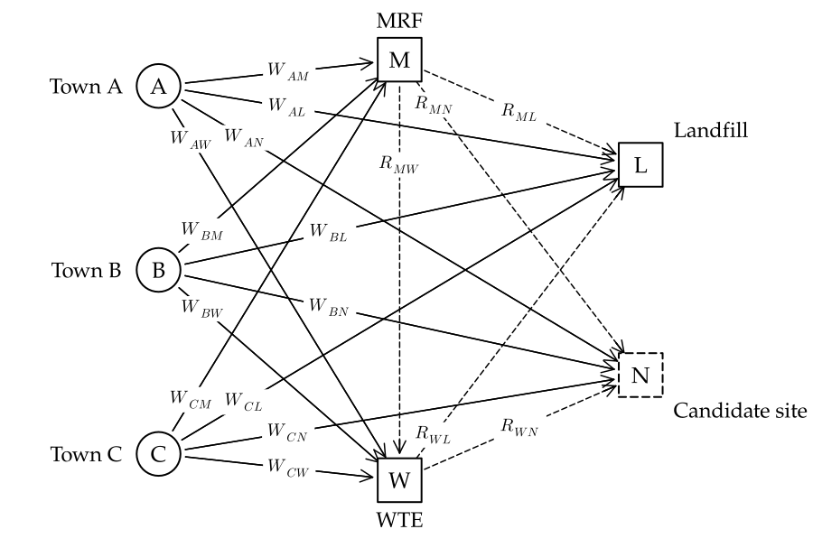

import Pkg
Pkg.activate(@__DIR__)
Pkg.instantiate()BEE 4750 Homework 8: Network Models and Waste Allocation
If you are enrolled in the course, use the assignment link posted on Ed Discussion so that we can find your repository if you need help.
Overview
Instructions
- Problem 1 asks you to formulate a decision model for expanding a county’s waste network given three new constraints: a recycling requirement, an emissions limit, and a limit on collection truck-hours.
- Problem 2 asks you to implement that model in
JuMP, solve it for a future year with and without the emissions limit, and explain how the limit changes the plan.
Load Environment
using JuMP
using HiGHSProblems (Total: 50 Points)
A county’s three towns, A, B and C, send their solid waste by collection truck to three existing facilities (Figure 1):
- a waste-to-energy facility (WTE, W), which burns waste to generate electricity. 25% of the waste mass it burns is left as ash, which must be transported by trailer to a landfill;
- a materials recovery facility (MRF, M), which recycles 40% of the solid waste it receives. The other 60%, the residual, has to be transported by trailer to the WTE or a landfill for further disposal;
- a privately run landfill (L).
The county is also exploring building a landfill of its own at a candidate site, N, near Town C.

Today the towns produce 100, 80 and 60 Mg/day of waste, and the current state requirement mandates that at least 10% of the waste produced must be recycled. The cost of sending 1 Mg along a route is the cost of hauling plus a charge where the waste arrives: the tipping fee at the WTE and the landfill, and at the MRF its $30/Mg tipping fee plus $60 for each Mg it recycles. Table 1 gives these costs.
| Cost ($/Mg) | To the MRF (M) | To the WTE (W) | To the landfill (L) |
|---|---|---|---|
| From Town A | 70 | 84 | 95 |
| From Town B | 84 | 72 | 85 |
| From Town C | 98 | 96 | 65 |
| MRF residual | 65 | 55 | |
| WTE ash | 52.5 |
Denote by \(W_{ij}\) the waste hauled from town \(i \in \{A, B, C\}\) to facility \(j \in \{M, W, L\}\), by \(R_{MW}\), \(R_{ML}\) and \(R_{WL}\) the residual and ash flows, by \(c_{ij}\) the town-to-facility costs in Table 1, and by \(d_i\) the waste town \(i\) produces (all flows in Mg/day). Today’s least-cost plan is the solution to
\[ \begin{aligned} \min_{\mathbf{W}, \mathbf{R}} \quad & \sum_{i} \sum_{j} c_{ij} W_{ij} + 65 R_{MW} + 55 R_{ML} + 52.5 R_{WL} \\ \text{subject to:} \quad & \sum_{j} W_{ij} = d_i && \text{(each town } i\text{)} \\ & R_{MW} + R_{ML} = 0.6 \sum_{i} W_{iM} && \text{(MRF residual)} \\ & R_{WL} = 0.25 \left(\sum_{i} W_{iW} + R_{MW}\right) && \text{(WTE ash)} \\ & \sum_{i} W_{iM} \leq 80 && \text{(MRF capacity)} \\ & \sum_{i} W_{iW} + R_{MW} \leq 70 && \text{(WTE capacity)} \\ & \sum_{i} W_{iL} + R_{ML} + R_{WL} \leq 160 && \text{(landfill capacity)} \\ & 0.4 \sum_{i} W_{iM} \geq 0.1 \sum_{i} d_i && \text{(recycling requirement)} \\ & W_{ij} \geq 0, \quad R_{MW}, R_{ML}, R_{WL} \geq 0. \end{aligned} \]
The county is now planning for a future year when the towns will produce 135, 108 and 81 Mg/day, and three new rules will apply:
- At least 25% of the waste the towns produce must be recycled.
- The county’s waste system may emit at most 96 t CO2e a day (tonnes of carbon dioxide equivalent, which counts methane by its warming effect). Waste in either landfill emits 0.6 t CO2e per Mg, from landfill methane. Waste that is burned emits 0.2 t CO2e per Mg, net of the emissions avoided by the electricity the WTE sells to the grid. Emissions from ash, recycling and hauling are not counted.
- The county’s collection trucks, which haul waste from the towns, will have 24 truck-hours (one truck driving for one hour) a day. Table 2 gives the truck-hours needed to haul 1 Mg along each route. The trailers that carry residuals have no such limit.
| Truck-hours per Mg | To M | To W | To L | To N |
|---|---|---|---|---|
| From Town A | 0.065 | 0.085 | 0.15 | 0.225 |
| From Town B | 0.1 | 0.055 | 0.125 | 0.2 |
| From Town C | 0.135 | 0.115 | 0.075 | 0.085 |
The county has realized that the existing facilities cannot meet these rules. The county can expand the MRF, expand the WTE, or build a new landfill at N, each up to a size it chooses. Each option has a fixed cost to operate and a capacity cost for each Mg/day of capacity added (Table 3). Both are annualized: the construction cost is spread over the life of the facility and given per day.
| Option | Fixed cost ($/day) | Capacity cost ($/day per Mg/day) | Largest size (Mg/day) |
|---|---|---|---|
| Expand the MRF | 1,000 | 10 | 150 |
| Expand the WTE | 1,500 | 60 | 80 |
| Build a landfill at N | 2,500 | 20 | 150 |
The county would run the landfill at N itself, at an operating cost of $25 per Mg received, in place of a tipping fee. N is 40, 35 and 12 km from Towns A, B and C, respectively, 30 km from the MRF, and 25 km from the WTE. Hauling costs $2 per Mg-km by collection truck and $0.50 per Mg-km by trailer.
Problem 1 (25)
Problem 1.1 (4)
Find the cost of sending 1 Mg along each of the five routes to N, as in Table 1: the hauling plus N’s operating cost. Give the costs as a table.
Problem 1.2 (8)
Formulate how three expansion options impact the existing decision problem. Use \(X_M\), \(X_W\) and \(Y_N\) for indicator variables that equal 1 if the MRF is expanded, the WTE is expanded, or the landfill at N is built; \(\Delta K_M\) and \(\Delta K_W\) for the capacity added at the MRF and the WTE, and \(K_N\) for the capacity of the landfill at N (Mg/day); and \(W_{AN}\), \(W_{BN}\), \(W_{CN}\), \(R_{MN}\) and \(R_{WN}\) for the flows to N. You should formulate the new objective, the capacity constraints of the expanded/new facilities, and any new mass-balance constraints.
Problem 1.3 (13)
Write the new constraints for the recycling requirement, the emissions limit, and the truck-hours limit.
Problem 2 (25)
The data are provided below, in the order towns A, B, C and facilities M, W, L (and N). Solve the new model twice, with and without the emissions limit, to compare the impact that it makes on the solution.
# Today's network: towns A, B, C (rows), facilities M, W, L (columns)
waste_today = [100, 80, 60] # [Mg/day]
collection_cost = [70 84 95; # [$/Mg] town i to facility j
84 72 85;
98 96 65]
residual_cost = [65, 55] # [$/Mg] MRF residual to W, to L
ash_cost = 52.5 # [$/Mg] WTE ash to L
recovery_fraction = 0.4 # share of MRF waste recycled
ash_fraction = 0.25 # share burned left as ash
capacity = [80, 70, 160] # [Mg/day] M, W, L
recycling_today = 0.1 # share of the waste recycled
# The planning year
waste_planning = [135, 108, 81] # [Mg/day]
recycling_planning = 0.25
emission_factor = [0, 0.2, 0.6] # [t CO2e/Mg] at M, W, a landfill
emissions_limit = 96 # [t CO2e/day]
# [truck-hours/Mg] from town i to M, W, L, N
truck_hours = [0.065 0.085 0.15 0.225;
0.1 0.055 0.125 0.2;
0.135 0.115 0.075 0.085]
fleet_hours = 24 # [truck-hours/day]
# The candidate site N
distance_to_N = [40, 35, 12] # [km] from towns A, B, C
mrf_to_N = 30 # [km]
wte_to_N = 25 # [km]
collection_rate = 2 # [$/Mg-km]
trailer_rate = 0.5 # [$/Mg-km]
operating_cost_N = 25 # [$/Mg]
# Expansion options: MRF, WTE, landfill at N
fixed_cost = [1000, 1500, 2500] # [$/day] if built
capacity_cost = [10, 60, 20] # [$/day per Mg/day]
largest_size = [150, 80, 150] # [Mg/day]Problem 2.1 (5)
Implement today’s model in JuMP and solve it. If your model is right, today’s plan costs $20,758.75 a day and has these flows (Mg/day):
| Flow (Mg/day) | To M | To W | To L |
|---|---|---|---|
| From Town A | 68.75 | 0 | 31.25 |
| From Town B | 0 | 70 | 10 |
| From Town C | 0 | 0 | 60 |
| MRF residual | 0 | 41.25 | |
| WTE ash | 17.5 |
Provide the output flows as a table and check that the solution matches.
Problem 2.2 (8)
Solve the new model, with the expansion options from Problem 1.2 and the constraints from Problem 1.3. Report which options should be built and their sizes, the daily cost, and the non-zero flows as a table. Compare the emissions, the waste recycled and the truck-hours with their limits. Which constraints are binding?
Problem 2.3 (5)
Fix the build decisions at their values from Problem 2.2 with fix_discrete_variables and solve again. Report the shadow price of the emissions limit, with its units and the sign JuMP gives it. What does it tell the county about the cost of the limit? This can be interpreted as an implicit carbon price.
Problem 2.4 (7)
Solve the new model without the emissions limit, and report which options are built and their sizes, as well as the objective. Explain why this differs from the results in Problem 2.2.